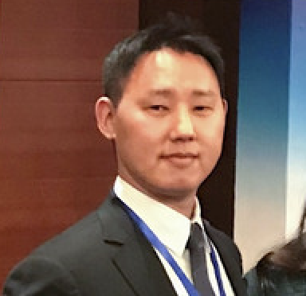

|  | Tae Hyung KimSenior Director and China Country Manager of Qeexo. Tae was born in Seoul, South Korea and currently works and lives in Shanghai, China with his wife and two children Born and raised in South Korea before moving to the United States, Japan, China and Hong Kong, I had to constantly adjust myself to new environments. Adapting, adopting and then becoming adept at the constantly changing tasks at hand helped me develop the following strengths - Adaptability, Multi-dimensional Perspective, Strategic Thinking, Positive Outlook and Communication. contact me | email: taekim0921@yahoo.com | +86 185.0213.2414 |
| The Wharton School, University of Pennsylvania | 2011-2013 |
| The Lauder Institute, University of Pennsylvania | 2011-2013 |
| Middlebury College | 2001-2007 |
| Qeexo, a Silicon Valley-based A.I. start-up | 2017-current |
| ELand China | 2014-2017 |
| ELand Group | 2013-2014 |
| McGraw-Hill Company | 2012 |
| The Walt Disney Company | 2010-2011 |
| Pyramid Research | 2007-2010 |
| United Nations Command | 2004-2006 |
| Language: | Bilingual in English and Korean, Proficient in Mandarin Chinese, Conversational Japanese |
| Computer: | MS Office, Python, |